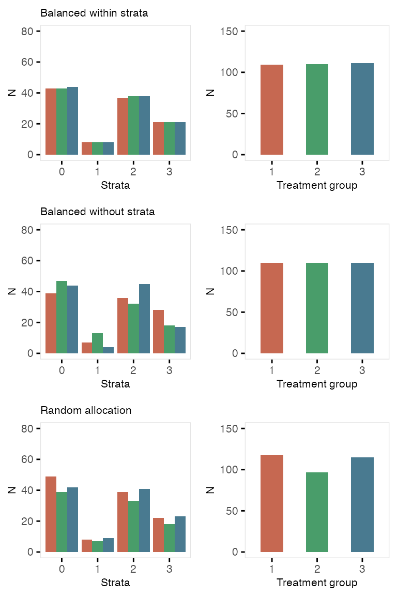
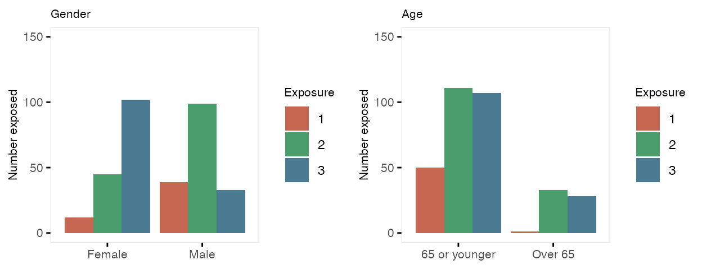
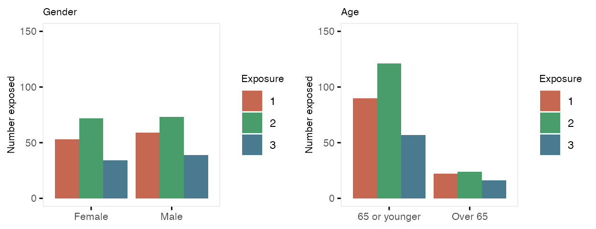

Treatment assignment can be accomplished through the original data
generation process, using defData and genData.
However, the functions trtAssign and
trtObserve provide more options to generate treatment
assignment.
Treatment assignment can simulate how the treatment allocation is made in a randomized study. Assignment to treatment groups can be (close to) balanced (as would occur in a block randomized trial); this balancing can be done without or without strata. Alternatively, the assignment can be left to chance without blocking; in this case, balance across treatment groups is not guaranteed, particularly with small sample sizes.
First, create the data definition:
def <- defData(varname = "male", dist = "binary",
formula = .5 , id="cid")
def <- defData(def, varname = "over65", dist = "binary",
formula = "-1.7 + .8*male", link="logit")
def <- defData(def, varname = "baseDBP", dist = "normal",
formula = 70, variance = 40)
dtstudy <- genData(330, def)Balanced treatment assignment, stratified by gender and age category (not blood pressure)
study1 <- trtAssign(dtstudy, n = 3, balanced = TRUE, strata = c("male", "over65"),
grpName = "rxGrp")
study1## Key: <cid>
## cid male over65 baseDBP rxGrp
## <int> <int> <int> <num> <int>
## 1: 1 0 0 76.65442 2
## 2: 2 1 0 57.48019 2
## 3: 3 1 0 77.64250 3
## 4: 4 0 0 68.92938 2
## 5: 5 0 0 71.86593 3
## ---
## 326: 326 0 0 74.55486 2
## 327: 327 1 0 66.13541 1
## 328: 328 1 0 62.99926 3
## 329: 329 0 0 73.38239 2
## 330: 330 1 1 74.65530 3Balanced treatment assignment (without stratification)
study2 <- trtAssign(dtstudy, n = 3, balanced = TRUE, grpName = "rxGrp")Random (unbalanced) treatment assignment
study3 <- trtAssign(dtstudy, n = 3, balanced = FALSE, grpName = "rxGrp")Comparison of three treatment assignment mechanisms 
defData
It is also possible to generate treatment assignments directly in the
defData and genData process. In this example,
randomization is stratified by gender and age, and the
outcome y is effected by both of these factors as well as the
treatment assignment variable rx.
def <- defData(varname = "male", dist = "binary",
formula = .5 , id="cid")
def <- defData(def, varname = "over65", dist = "binary",
formula = "-1.7 + .8*male", link="logit")
def <- defData(def, varname = "rx", dist = "trtAssign",
formula = "1;1", variance = "male;over65")
def <- defData(def, varname = "y", dist = "normal",
formula = "20 + 5*male + 10*over65 + 10*rx", variance = 40)
dtstudy <- genData(330, def)
dtstudy## Key: <cid>
## cid male over65 rx y
## <int> <int> <int> <int> <num>
## 1: 1 1 0 1 36.60755
## 2: 2 0 0 1 38.47782
## 3: 3 0 1 0 29.28461
## 4: 4 0 0 1 31.91919
## 5: 5 0 0 0 24.67497
## ---
## 326: 326 0 0 1 28.90395
## 327: 327 0 0 1 28.15482
## 328: 328 1 0 0 39.20918
## 329: 329 1 0 0 27.34701
## 330: 330 1 0 0 32.81881Here are the counts and average outcomes for each gender, age, and treatment combination:
## Key: <male, over65, rx>
## male over65 rx n avg
## <int> <int> <int> <int> <num>
## 1: 0 0 0 65 20.8
## 2: 0 0 1 66 30.9
## 3: 0 1 0 14 31.7
## 4: 0 1 1 14 38.2
## 5: 1 0 0 69 25.9
## 6: 1 0 1 68 35.4
## 7: 1 1 0 17 32.6
## 8: 1 1 1 17 45.6If exposure or treatment is observed (rather than randomly assigned),
use trtObserved to generate groups. There may be any number
of possible exposure or treatment groups, and the probability of
exposure to a specific level can depend on covariates already in the
data set. In this case, there are three exposure groups that vary by
gender and age:
formula1 <- c("-2 + 2*male - .5*over65", "-1 + 2*male + .5*over65")
dtExp <- trtObserve(dtstudy, formulas = formula1, logit.link = TRUE, grpName = "exposure")Here are the exposure distributions by gender and age:

Here is a second case of three exposures where the exposure is
independent of any covariates. Note that specifying the formula as
c(.35, .45) is the same as specifying it is
c(.35, .45, .20). Also, when referring to probabilities,
the identity link is used:
formula2 <- c(0.35, 0.45)
dtExp2 <- trtObserve(dtstudy, formulas = formula2, logit.link = FALSE, grpName = "exposure")
Stepped-wedge designs are a special class of cluster randomized trials where each cluster is observed in both treatment arms (as opposed to the classic parallel design where only some of the clusters receive the treatment). This is a special case of a cross-over design, where the cross-over is only in one direction: control (or pre-intervention) to intervention.
In this example, the data generating process looks like this:
where is the outcome for individual in cluster in time period , is a cluster-specific effect, is the intervention indicator that has a value 1 during periods where the cluster is under the intervention, and is the individual-level effect. Both and are normally distributed with mean 0 and variances and , respectively. is the time trend, and is the intervention effect.
We need to define the cluster-level variables (i.e. the cluster effect and the cluster size) as well as the individual specific outcome. In this case each cluster will have 15 individuals per period, and . In addition, .
library(simstudy)
library(ggplot2)
defc <- defData(varname = "ceffect", formula = 0, variance = 0.20,
dist = "normal", id = "cluster")
defc <- defData(defc, "m", formula = 15, dist = "nonrandom")
defa <- defDataAdd(varname = "Y",
formula = "0 + ceffect + 0.1*period + trt*1.5",
variance = 1.75, dist = "normal")In this case, there will be 30 clusters and 24 time periods. With 15 individuals per cluster per period, there will be 360 observations for each cluster, and 10,800 in total. (There is no reason the cluster sizes need to be deterministic, but I just did that to simplify things a bit.)
Cluster-level intervention assignment is done after generating the
cluster-level and time-period data. The call to
trtStepWedge includes 3 key arguments that specify the
number of waves, the length of each wave, and the period during which
the first clusters begin the intervention.
nWaves indicates how many clusters share the same
starting period for the intervention. In this case, we have 5 waves,
with 6 clusters each. startPer is the first period of the
first wave. The earliest starting period is 0, the first period. Here,
the first wave starts the intervention during period 4.
lenWaves indicates the length between starting points for
each wave. Here, a length of 4 means that the starting points will be 4,
8, 12, 16, and 20.
Once the treatment assignments are made, the individual records are created and the outcome data are generated in the last step.
set.seed(608477)
dc <- genData(30, defc)
dp <- addPeriods(dc, 24, "cluster", timevarName = "t")
dp <- trtStepWedge(dp, "cluster", nWaves = 5, lenWaves = 4,
startPer = 4, grpName = "trt")
dd <- genCluster(dp, cLevelVar = "timeID", "m", "id")
dd <- addColumns(defa, dd)
dd## Key: <id>
## cluster timeID period ceffect m startTrt trt id Y
## <int> <int> <int> <num> <num> <num> <num> <int> <num>
## 1: 1 1 0 0.62775229 15 4 0 1 1.5236098
## 2: 1 1 0 0.62775229 15 4 0 2 0.9863920
## 3: 1 1 0 0.62775229 15 4 0 3 -0.1232112
## 4: 1 1 0 0.62775229 15 4 0 4 2.0901759
## 5: 1 1 0 0.62775229 15 4 0 5 -2.3404034
## ---
## 10796: 30 720 23 -0.09828129 15 20 1 10796 1.9167998
## 10797: 30 720 23 -0.09828129 15 20 1 10797 5.9206722
## 10798: 30 720 23 -0.09828129 15 20 1 10798 4.1182178
## 10799: 30 720 23 -0.09828129 15 20 1 10799 4.5691583
## 10800: 30 720 23 -0.09828129 15 20 1 10800 3.6557608
dSum <- dd[, .(Y = mean(Y)), keyby = .(cluster, period, trt, startTrt)]
ggplot(data = dSum,
aes(x = period, y = Y, group = interaction(cluster, trt))) +
geom_line(aes(color = factor(trt))) +
facet_grid(factor(startTrt, labels = c(1 : 5)) ~ .) +
scale_x_continuous(breaks = seq(0, 23, by = 4), name = "week") +
scale_color_manual(values = c("#b8cce4", "#4e81ba")) +
theme(panel.grid = element_blank(),
legend.position = "none")